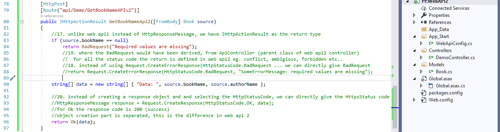
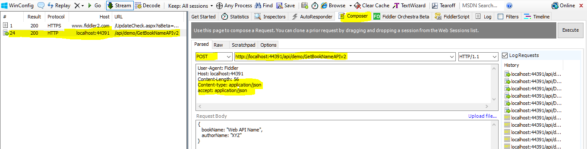
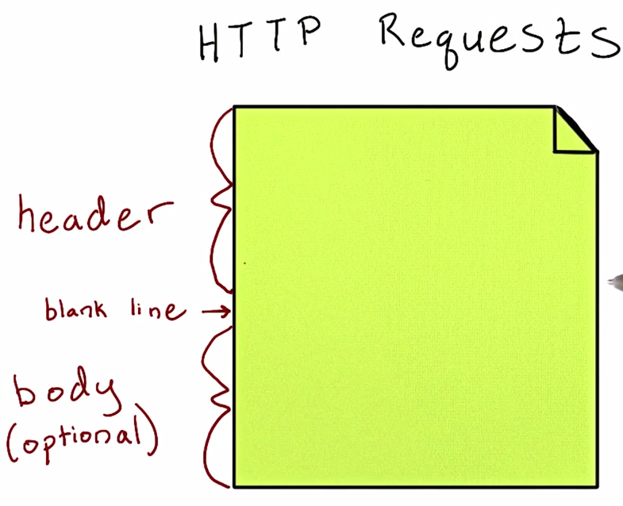

web api2
the first four sections are theory, conceptually how the web api works and their advantages
the next three section, it is code part to implement the above theory section
what is web api2: there is no need to have knowledge of webapi1 to learn webapi2
web api is a general term, it can be developed in java, php, or any toehr server side language
here we are learning using microsoft framework how we are going to learn web api and it is called asp.net web api
web api is used to create http services
web api is split into two layers
--> (a) client
--> (b) server
what is there in Client layer: desktop applications, mobie application, web browser etc (any devices)
from client using http:// protocol a request is sent to server (http request is sent)
server accepts and responds to the request in the from of XML,
json, other format (csv, tsv, etc.) (http response is sent)
in microsoft technology, we had wcf having the same functionality
then what is the different between wcf and web api, there it self we could have called a http service and yes, it is possible to create web api
wcf can be called as the first version of web api, but web api 2 has advanced features
Http Request: http://servername/apiname?id=10
Http Response: = { "Name": "xyz", "Age": "45" } <-- this is json format
if a request and response works using http, then it is a restful service
restful service is a architectural pattern
using http protocol a service can be called, for different clients the reponse from the server will be the same
when compared to wcf what are the adventages of using webapi
--> content negotiation: a service can give xml, json, csv, tsv etc. format and for the same service to return
different output we need to write separate code and need to be returned speratately
using content negotiation concept if client tell that it needs xml as output, it will return the content in xml format
similarly if client request for json, it will return the content in json format
--> web api is light weight frame work for api development, in previous framework to process a request there used to
be many components (request passes through many component ie. wcf)
but in web api the architecture/pipeline is very simple
--> web api supports different formats of response data (built in support for xml, json and custom data can also be
built)
--> restful services can be creted in wcf also, but lots of configuration are required in wcf web.config here in webapi
this is not required (it is much simplified)
--> in web api we will be creating methods for GET, PUT, POST, DELETE (all these verbs will be automatically mapped)
how, where and why it will be auto mapped will be seens in later code
--> all the above are advantages of web api, lets see the advantages of web api2
--> attribute based routing: to understand this we need to know what is routing, what is attribute and then we
can understand how routing happens based on attribute
--> in built cors implement (cors can just be enabled and disbaled in web api 2)
web api also has a disadvantage: when workign with wcf binding is possible with tcp, msmq, http, etc
but with web api is it not possible. only HTTP protocol is supported

--> a HTTP client request for a data, this request reaches web api controller
--> the web api controller will give the response back to the HTTP client
this is the basic pipeline
--> over all, different clients will connect to web api and the single service will respond back to
all the clients
Now lets see a simple web api implementation
refer the project (PP.WebAPI2)
create a empty application and then select (web api), a project will be created with basic files
below is the structure of the solution, even though there are many folders files are present in only two
folders. the files are WebApiConfig.cs and Global.asax.cs
in the above if we have not selected the web api check box then these two files also would not
have been created
--> in global.asax, we have application_start() event which will be fired only once
--> inside this we are registering the webapiconfig, then what is the advantage of registration
--> right click on register and go to definition, this will go to webapiconfig.cs file inside app_start folder
there is a line called: config.MapHttpAttributeRoutes();
this line is there because we are using webapi2, in webapi1 the above line is not there
not lets focus on controller and we will go to the controller folder
all the codes that we write should be inside the controller folder
lets create the first controller, right click the controller folder add --> controller
add scaffold, dialog will open as below and select the Web API 2 Controller - Empty
why do we use these controllers, each and every service called from client (getBookDetails, updateEmployeeDetails etc..)
and all these methods will be defined inside the controller
in short web api login is written in controller
lets name the first controller as DemoController
the first DemoController is ready
the DemoController is inherited from ApiController
ApiController is the based for web api
all the web api's that we will be creating will be extended from ApiController class
it is mandatory that webapi controller should be defined from ApiController
the first opertion in service is: GetMyName()
(a) create a simple function (calling this service will return the string "welcome to web api 2"
(b) now a simple service is created, lets call the service (run the application)
in browser, enter the command: http://localhost:44391/api/demo/GetMyName
multiple questions should arise now, in url why are we giving api, demo and how can we call the
method GetMyName() directly from url
calling a method, directly from the browser is called as HTTP services
http://localhost:44391 (this called domain)
api/demo/GetMyName (this is called root)
which means root is pointing to the serivce or how it matches the service
the answer is available in webapiconfig.cs file
which has a line called: routeTemplate:
config.Routes.MapHttpRoute(
name: "DefaultApi",
routeTemplate: "api/{controller}/{id}",
defaults: new { id = RouteParameter.Optional }
the above is the classic routing mechanism that we are using from web api1
name: can be any user defined name
routeTemplate: (very important) "api/{controllerName}/{parameter}"
this patter will match with the pattern of the root
all the controllers will end with controller, it is possible to change or remove the controller name but for that lost
of lines of cofde is required
now in the browser if we get the method name and call the service as: http://localhost:44391/api/demo/
then also we will get the output. (in a browser the default method is get method, but we have no where specified it as
the get method, then how it is going)
this is the tricky part of asp.net web api framework
in a controller if any of the method starts with GetMyName, GetXYZ, GetABC etc.. by looking at the Get in the method Name
it will assume it as root
lets assume we change the method name from GetMyName to PostMyName and in the address bar if we type as
http://localhost:44391/api/demo/ then it will not work
it is the intelligence of the web api, by reading the method name it will identify whether it is a GET, POST, PUT, DELETE
Lets see a new tool: fiddler
open fiddler, and execute 'start' command from fiddler console and open browser and hit the url: http://localhost:44391/api/demo/
give stop command, once our response is captured by the fiddler
fiddler will help to view the request we gave and the response it captured
in (Inspector) tab we can see all the information
In header part we can see the, content-type: application/xml
this means the request is passed for an XML response, hence if we go to the XML tab we can see the response as XML
we can go to compose and give the same request here also
In the (Parsed) tab, Select the verb as (GET) and enter the url and hit the (Execute) button
So why do we use fiddler, when browser is able to display the GET result. Browser will not support, PUT, POST, DELETE request etc.
to validate we may need to create a new test client application, to save time we are using one of the well established tool - fiddler
In the (COMPOSE) tab, just by selecting the required verb we can perform needed action link GET, PUT, POST and DELETE
Web API is server implementation and calling can be done from web brower, mobile application, desktop application like fiddler or any client
we can see that the response received is: 200, the return type is: json
we can see that json tab has the response out
lets go the composer tab and in header section enter: Content-type:application/json and hit execute
we can see the 200 response from server and the return type is json
similarly if we update the content-type to (Content-type:application/xml) and hit execute button
we can see the 200 response from server and the return type is xml
First advantage: In web api code we have not specified any thing, just a string is returned. from the calling client if we tell
we need xml, the output we are receiving is in xml format. again from the client if we tell we need the output in json format, we are
receiving the data in json format
this conversion part is automatically handled by web-api (this we can understand when we see pipeline)
based on the request type web-api is sending data to the client in requeted format (now point 2 in advantages slide will be clear)
till now we have not written any complex function, we have just created a three function and calling from fiddler is works
automatically by looking the method name (GET****) it binds the method to GET verb
now lets create one more method GetKeyWords()
now the question arises, since there are more that 1 get how web api will behave, we will get the error as "multiple entry points"
from fiddler compose call the url: http://localhost:44391/api/demo/
Due to multiple Get methods in DemoController it is unable to locate the Route, to resolve this error the solution is
on top of the method, decorate with verb like: [HttpGet]
this is the recommended method to delcare a verb
After verb give the route as: [Route ("api/Demo/GetString")]
similary specify the route for the other method also: [Route ("api/Demo/GetKeyWords")]
now run the application
During compilation, all the route will be stored in a place called RouteDictonary
Now from Composer tab, enter the url (http://localhost:44391/api/demo/GetString) and execute the GET verb method
now this time, we got 200 as server response code and got the output in json format
now call the another method GetKeyWords from componse and we get the json out as: data1 data2
Now since we have the Route for the method (GetMyName) as [Route ("api/Demo/GetString")]
we need to access the method, only with name defined in route and not with actual method name
if we call with actual method name we will get below error
(error) No HTTP resource was found that matches the request URI 'http://localhost:44391/api/demo/GetMyName'
information present in composer header:
User-Agent: Fiddler
Host: localhost:44391
Content-type: application/json

from the url pattern (http://localhost:44391/api/demo/GetString) we can understand that (http://localhost:44391/api/demo)
is mapped to the routeTemplate with api -> keyword followed by controller name (demo)
routeTemplate: "api/{controller}/{id}"
config.Routes.MapHttpRoute(
name: "DefaultApi",
routeTemplate: "api/{controller}/{id}",
defaults: new { id = RouteParameter.Optional }
);
above is the classic routing mechanism that is followed in mvc and web api 1
the advantage of web api 2 is attribute based route mechanism,
only using this attribute based routing mechanism the route which we define in the methods are working
route defined in the methods: [Route ("api/Demo/GetString")]
now what is the big advantage of attribute based routing
--> using attribute based routing simple versioning in the application can be achieved
what ever may be the return type of the method, based on the content type defined in the client (json or xml)
web api is returning the data which client is requesting
formatter in webapi is responsible for doing this action
both the methods that we have written in DemoController, are returning string and IEnumerable but using content type client is able
to receive the required response
Now lets create a model (which is nothing but a type to define employee, employer, book etc)
model folder (right click) add Class (book.cs) and Add
lets create two properties (a) bookName and (b) authorName
lets expose one more new service (create a new method, which will return the values of book)
what ever value we get in the method, we are returning the same value
to the top of method add corresponding verb followed by attribute routing
FromBody: means it will convert the value in the body to the book attribute (details we can see in pipeline)
Now run the application
when we run the application we will get the above error, because we have not passed the input values but trying to access the data
when no data was entered, null was passed and hence the server response code is:500 which means the object is null
500: internal server error
200: success
400: client side error (like page not found)
in the request body of the componser, lets pass the values
{ bookName: "Web API Basic",
authorName: "XYZ" }
now lets run the application and we should get the response

Since the input is RequestBody, in webapi we are reading using [FromBody]
public IEnumerable GetBookName([FromBody] Book source)
now lets see how the GetBookName() method can be written using web api 1
instead of IEnumerable we use the return type as HttpResponseMessage
in web api 2, what ever be the return type string, int, IEnumerable etc.. that type that will be returned to
the client will be of type HttpResponseMessage
just for coding flexibility, we are using the return type from service method as string, int, IEnumerable etc..
so all the high level return types will be internally coverted to HttpResponseMessage and will be sent to client
now coming to parameter: HttpRequestMessage will be the input to a service method
the raw input (HttpRequestMessage) will be converted to [FromBody] and then from [FromBody] we convert to required objects
now lets create a HttpResponseMessage to return the data
Request.CreateResponse will accept two parameters (a)HttpStatusCode (b)return value
consider a scenario, when the bookName is not available we should not return HttpStatusCode.OK
for that we can perform some validation
lets run the application
we have received the output that we have passed
now lets removed bookName from RequestBody and pass only the authorName to the service method

in raw data section we could see the error message (SomeErrorMessage: required values are missing) that we have given in the service method
now in request header like content-type: application/json (which means we are sending the content of RequestBody in the
form of json to service method)
similar to that we can use: accept: application/xml (we are telling that we need the request from service as xml)
accept: application/xml, we have received the output in the form of xml
the above is an old approach where we create a raw HttpResponseMessage and handleing exception in web api 1
in web api2 they decided that, no need to create multiple Create request and objects (response)
Request.CreateErrorResponse(HttpStatusCode.BadRequest, ...
HttpResponseMessage response = Request.CreateResponse(HttpStatusCode.OK, data);
just like a wrapper class, in web api 2 they have give as below, but the internal workking will be as above only
web api 2, we are separating the code to create response object
instead of HttpResponseMessage, we have IHttpActionResult as the return type
unlike web api1 instead of HttpResponseMessage, we have IHttpActionResult as the return type
instead of using Request.CreateErrorResponse(HttpStatusCode.BadRequest ... we can directly give BadRequest
where the BadRequest would have been derived, from ApiController (parent class of web api2 controller)
for all the status code the return is defined in web api2 eg. conflict, ambigious, forbidden etc..
instead of creating a response object and and selecting the HttpStatusCode, we can directly give the HttpsStatus code
for Ok the response code is 200 (success)
object creation part is separated, this is the difference in web api 2

run the application
call the service method v2 using composer, and pass the data in RequestBody (for a valid data)

response for invalid / missing data
we get the response code as 400
we could see the error message that was returned from the service method
in the above basic demo we have seen how to read an input, return output, what is content negotiation
with the above knowledge, lets understand web api pipeline
till now what we have done is we are using fiddler as http client
the web api logic is written in controller, we submit the request and we receive the response from web api
before going futher we need to understand http protocol
http protocol has two sections header and request body, header contains the input and output type
where as request body contains the input values
1:07:00
Http reference: https://www.youtube.com/watch?v=pHFWGN-upGM
Parts of an HTTP request
the fundamental part of understanding restful api is understanding the flow of HTTP
HTTP can be described as the pull protocol
communication is always initiated by the client, which sends HTTP request to the server
inturn the server responds with the response message
these messages are just bytes of text, which machine converts into images, text, multimedia components
lets discuss the major compoents of http request and response
every HTTP request consists of a message header and an optional message body, separated by blank line

the two entities header and (optional) body are separated by space
in HTTP request the first line of the header is called request line
HTTP request line consists of:
--> HTTP Verb
--> URI (uniform resource identifier)
--> HTTP version number
the below are examples of HTTP request line
the verbs are: GET, POST, DELETE
the resource that we are going to access are the URI (/home.html, /index.html)
the version of http at the end
after the request line, we have optional request headers
In optional request headers, we can define specific properties about our request/li>
request headers appear in name:value pairs
multiple values can be separated by commas
a blank lines spearates the header and body of the HTTP request
in the body we can add any other information about the request, that we want to send along with the server
an example of complete HTTP message is shown here
now lets go back to our web api learning
with the existing knowlede about web api we can understand the pipeline of webapi
now we will have a doubt that, how the input parameter is getting mapped, how the output is converted and received by client as json and xml
in the request the first end point is IIS Server or SelfHost
what ever request we give from client (which ever device if may be) the request will first reach IIS Server (rare scenario is selfhost, which we are not discussing here)
request reaching IIS means it is reaching a web server
IIS on receiving the request will transfer the raw request to HTTP server (ie. the clients raw request will directly go to Http Server (using IIS)
So HttpServer is internally handling the raw request
work of HTTPServer:
--> the raw request that we receive from HTML/client will be coverted to HttpRequestMessage object
--> the incoming uri, query string data etc, will be converted as a HttpRequestMessage object
--> so the output of HTTPServer, will be an objectof type (HttpRequestMessage) which will pass from HTTPServer to WebAPI Controller
--> in short the raw http request will be coverted to HttpRequestMessage object by HTTPServer
in code (at WebAPI Controller) we will be reading the HttpRequestMessage and the output from (WebAPI Controller) will be HttpResponseMessage
to HTTPServer
again HTTPServer dispatches the HttpResponseMessage to client using IIS Server
so when the response goes out the last end point is HttpServer
now lets understand this some more in detail
Summary till now:
--> Give from client (which ever device if may be) the request will first reach IIS Server
--> IIS on receiving the request will transfer the raw request to HTTP server (ie. the clients raw request will directly go to Http Server (using IIS)
--> HttpServer is internally handling the raw request (the incoming uri, header, form-body query string data etc) will be converted as a HttpRequestMessage object)
--> so the output of HTTPServer, will be an objectof type (HttpRequestMessage) which will pass from HTTPServer to WebAPI Controller
till now HttpServer has converted the incoming raw request (header, form-body query string data etc) to HttpRequestMessage object
the HttpResponseMessage object will directly come to (Routing Selector)
Route Selector is nothing but the below selected Default Route in WebApiConfig.cs page in Register() method
if this code is commented: config.MapHttpAttributeRoutes();
then the attribute based routing code which we defined on top of the method will not work
example below:
[HttpPost]
[Route("api/Demo/GetBookNameAPIv2")]
public IHttpActionResult GetBookNameApi2([FromBody] Book source)
{ ..
}
in the code we can see that first we have registered
(a) attribute based routing and
(b) then we have registered classic routing
we can change the order, but the problem is if url pattern matches any page then it will be mapped to that route
so with RouteSelector, it can now identify the HttpRequestMessage object should go to which controller and which method
the next step in the pipeline is: based on the Controller Name and Method Name,
--> controller will be made as an object
--> and then it will be activated: this is done by a component (Controller Selector and activator) component
recap:
--> raw request is comming, which will be converted to HttpRequestMessage
--> based on the url pattern, route will be selected (which will help to identify the controller and method)
--> controller object will be created and activated and call will go to that controller
the above is a simple outline of the process, lets see the next steps below

Now the Controller Selector and activator will call an another component called: (Model Binding)
see the below eg: we are passing the parameter and mapping to the source to Book
ie. we take the data from formBody and map it an object (source) which is of type
Book [Creating a source object of type Book], this part is happening in (Controller Selector and Activator) component
once the controller is activated, the parameter assignment happens in (Model Binding) ie. [FromBody] Book source
now controller is activated, the data for ModelBinding is loaded from (HttpRequestMessage)
ModelBinding, receives the parameter data from
--> URI
--> FromBody
--> Header (by writing custom code, to be discussed later)
ie.) once the controller is activated, before going to the controller using (ModelBinding) component, the
required parameter are created using URL, FromBody, Header
the order is:
(a) route is first selected: [Route("api/Demo/GetBookNameAPIv2")]
(b) next the required method is activated: public IHttpActionResult GetBookNameApi2(...
(c) then the parameters required for the methods are now created: ... GetBookNameApi2([FromBody] Book source)
now the request reaches the web api controller and the logic that we have written inside the method gets activated
so now the controller will return the resultset (in pipeline is it called as an component called: ResultConversion)
the work of ResultConversion is: whatever value the controller method returns the response will be sent as (HttpResponseMessage) by the (Controller Selector and Activator) component
all these are inbuilt components and we will not be making any changes to the pipeline components
the next part to see is: Custom Extension
1:13:51
Previously we have seen the existing compoents of the pipeline, now we are going to see how we can customize the pipeline
the big disadvantage is consider the below example: where we get 500 response from the server
Here we can explicitly see the error in raw tab, this is an unhandled exception where the code is explicitely visible
what is written in a particular row and line number, error should never be thrown unhandled
for that we need to see how we can handled the error globally which is called Global Exception Handling
Authentication/Authorization: Eg: when a web api is pubicly hosted, any body can connect and get the data. Which should not be the case.
There should be a valid user name and password
Only user who give proper user name and password will be allowed to get the data from web api
to handle the username and password we can go and write check in each method by passing user name and password as parameters
to check the given password information (Authentication information) is correct or not
Authorization: Eg: only a user with manager role should call this method, eg: if login user is a super user then the access will be
available for the followng methods
The authorization and authentication information can be done in custom exception section
Logging: all the incomming request weather it is a valid or invalid request
in the pipeline we have seen from HttpServer the request comes to Routing Selector, in the HttpServer it self before coming
to Routing Selector we need to check (Authenticate) and return the request if it is not valid
Consider an example, where we do not want to receive request from a particular country-region (Eg: UK-EMEA)
All the geo specific filters can be handled before the control reaches (Routing Selector) component
Using Logging concept we can validate the incoming request before it reaches Routing Selector component
If a login is common for all the controllers, in the pipeline we have extensions for each of the component
the below screen explains the avaiable extension to us
initially we have seen that request comes from IIS Server to HTTP Server, in HTTP Server the HTTPRequestMessage will be created, which then
will be passed to Routing Selector component
once the HTTPRequestMessage is created it will not directly go to Routing, in between (HTTP Server) and (Routing Selector) we have a component
called (Delegate Handler)
Delegate Handler: (working) if any delegate Handler is present in the pipeline it will execute it, if the logic we introduced
in Delegate Handler is not satisfied then we can return the request from Delegate Handler to Http Server
if our logic in Delegate Handler is satisfied (everythis is correct eg: geo-country validation), then only the request will
move from (Delegate Handler) to (Routing Selector)
Now how can we add our custom logic to (Delegate Handler), we need to go to the pipeline (WebApiConfig.cs) file
above the line //Web API routes add the line config.Delegates.Add(give the className), now this class will be added to the delegate
How it works: Http Server component will check if there are any Delegate components mapped, if mapped the logic will be executed
based on the logic the control will either return back or proceed further in the pipeline to the next component
Note: we can call the Delegate Handler or (extension point) of HTTP Server as HttpMessageHandler
--> this is the first custom entry for all the web API requests
--> if the custom logic is not satisfied then we can stop the request in pipeline and return the response from here

Now that in Delegate Handler (Extension Point) the custom logic is validated and identified to be a valid request (Passed)
Now the control will come to route selector, the above Delegate Handler was written common to all
Next after the Route Selector is execuited we have another checkpoint, to check if the RouteSelector component has a
dediated (Route Delegate Handler)
if available (exist), that particular Route Delegate Handler will work
In this Route Delegate Handler, we can have our own logic, (if our logical conditions are not satisfied) we can return the request
back to Http Server as (invalid request)
if there is not route specific contoller, then our request will directly go to (Controller Selector and Activator) component
We can see how we can write the extensions which we have seen above (Delegate Handler) and (Route Delegate Handler)
In all the previous examples, which we have seen is basically we will create a controller, call from the client
in short in controller we will write only the domain/business logic and only the response will be returned back
the above what we have seen, for that we will not write the code in controller, we will be writing the code specific to routes
we will see further on how the request flows from (Controller Selector and Activator) component
After (Controller Selector and Activator) is passed, the next filter to fire is: (Authentication Filter)
In later code we will see, how we can write authentication filter
once the (Authentication Filter) is fired then (Authorization Filter) will next be fired
(Authorization Filter) will be called before (Model Binding) component, what will happen is it will take the form url, the passing parameters
(Authorization Filter) if therer are any un-authorized user, the request will be sent back to the (Controller Selector and Activator) component
if the user is an authorized user, then request will flow to (Model Binding) component and from there it will move to (Action Filter) component
After the model binding is execuited, parameters will be mapped
1:21:20
Lets see the full recap:
Request is comming, from (HttpClient),
(a) IIS Server: it will first reach (IIS Server)
(b) Http Server: From (IIS Server) it will reach the first entry point, here the raw header, query string will be converted to strongly typed object
--> strongly typed object messages means, they are converted to (HTTPRequestMessage)
(c) Delegate Handler: now the control moves to (Delegate Handler) which will try to identify if there is any common logic
--> if there is any common logic then it will be execuited
(d) Route Selector: if the request is valid then the control will flow to route selector, here the (Route Selector) will chec if there is any
custom logic implemented here
(e) Control Selector and activator: If (Route Selector) does not have custom logic then the flow moves to (Control Selector and Activator)
(f) Authentication Filter: From Control Selector and Activator, it will check if there is any Authentication performed or not
(g) Authorization Filter: If any (Authentication) logic is implemented and its response is true, the control will move to (Authorization Filter)
(h) Model Binding: If the result of (Authorization Filter) is true/passed then only the control will move to (Model Binding)
--> when the control comes out of (Model Binding) the parameter would have been mapped
--> when parameter gets mapped, the original domain logic/business logic will get execuited
--> before the business logic gets execuited, once the parameters get mapped to the service controller
method (in Model Binding component) and before the business logic get execuited
--> if we want to write some code, then we have a component called (Action Filter - [OnActionExecuting/OnActionExecuted])
(i) Action Filter - [OnActionExecuting/OnActionExecuted]: Once the parameters get mapped to the service
method (in Model Binding component) and before the business logic get execuited
--> between this if we want to introduce any custom logic then Action Filters can be used
--> this Action Filter has two methods (a) OnActionExecuting and (b) OnActionExecuted
(j) OnActionExecuting: will be called before the execuition of the business login in service controller method (in short: once the
parameter gets mapped, we want to execute a set of code, then in that case we need to use the (Action Filter),
which has an event called OnActionExecuting
--> this event gets fired, before the execuition of the controller service method
--> when this (OnActionExecuting) gets execuited (i.e. when the execuition is completed, what ever business logic we have written
in the controller service method, will get execuited (refer above image, part of the code which is rounded)
(k) OnActionExecuted: Once our business logic is executed and return value is set then (OnActionExected) will be called
So the summary is, before we execute the business logic of Controller Service method, if we need to execute a set of code for all the
Controller Service method we can do it (and it is possible), this code need to be written in OnActionExected method
after the execuition of our business logic (in Controller Service method), if we want to execute a common set of code then
it can be written in (OnActionExecuted)
once the code of (OnActionExecuted), which is part of (Action Filter), will now move to (Result Conversion)
(l) Result Conversion: What ever may be the Result Conversion type, it will be converted to (HttpResponseMessage) type
--> From WebAPI, we may sent the return type as string, int, boolean, IEnumerable etc.. but when it comes to (Result Conversion) it
will be converted to (HttpResponseMessage) of the type we need (json/xml) output
(m) Authorization Filter: from (Result Conversion) it will got Authorization Filter
--> the above process was for the normal data flow, we will now see in case of an exception
(n) Exception Filter: Globally to handle all the error we need to write/use a filter of type (Exception Filter)
--> Exception filter will be fired, when there is an error
--> first it will check if there is any try..catch block
--> if there is no local try..catch block then it will go to Exception filter, execute the common code and it will go out
to (Authentication Filter)
In the pipeline we can see that, (Result Conversion) and (Model Binding) are having a star, because they are inbult component given by the WebAPI
--> Model Binding, will be mapped from uri, header etc.. in addition we can also write our custom logic
--> Result Conversion: is also an inbuilt component of WebAPI, here also we can write our custom logic
All GREEN boxes in image are basic components given by WebAPI
GREEN box will star, represents the in the basic component we can also write our own extension code
ORANGE boxes, we will be writing the code from the scratch there is no dependency
if the above pipeline is well understood we can do any thing in webapi
>